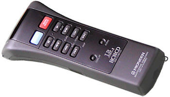
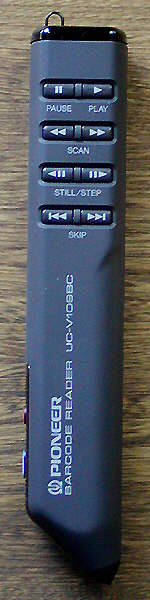

Pioneer LaserBarcode System
Swipe a printed strip of barcodes to command a laserdisc

Overview
Pioneer's industrial laserdisc players began as computer-controlled Level III training machines (the MCA DiscoVision PR-7820 era). In the mid-1980s Pioneer developed a far simpler control path aimed at classrooms: printed barcodes encoding the LaserBarcode command language. A pen-type wand (UC-V109BC) with a light-tipped end was traced across a barcode while holding the read button, giving "instantaneous access to any frame" of the disc — jump to a chapter, a time code, a still, or play a pre-selected segment. A scan-type wand (UC-V108BC) worked the same way with a read button at the scanning end. Both doubled as wireless remotes with play, pause, scan, still/step, and skip buttons.
The interaction is a physical ritual: the user holds the wand and literally traces its light-tipped end across a printed strip of black bars. Because the commands live on paper, the control surface can be photocopied, pasted into textbooks, laminated, or taped to a desk. The players — the CLD-V1000 (c. 1985) and later the CLD-V2400/V2600 "BARCODE" players (1990-91) — shipped with barcode readers and a printed sheet of basic commands.
Pioneer sold the authoring side as software rather than a closed system: BarKoder for Windows (LBC-WIN1) and Bar 'n Coder for Macintosh/HyperCard (LBC-NC3) generated command barcodes conforming to the LaserBarcode, LaserBarcode 2, and Bar Code CD standards. Commands covered chapter/frame/time search, segment play, slow-reverse, audio channel select, and more. The system was "compatible with hundreds of educational discs with barcoded guides from major publishers," and found use in classrooms, corporate training, and point-of-information kiosks.
Deep dive
The barcode strip is the interface; the expensive player is just the actuator. A teacher could run a training disc from the front of a classroom with nothing more than a wand and a laminated sheet — no computer, no keyboard, no programming. This is physical-object-as-interface at professional scale.
Any trainer could print custom command barcodes for any existing disc using BarKoder or Bar 'n Coder, rehearse them against a player over RS-232, and paste them into documents or Avery label sheets. The "software" of an interactive video lesson was literally printed on paper.
TI Magic Wand (1982) swipes barcodes to trigger speech in a children's book toy; Cauzin Softstrip (1985) prints data as barcodes a computer can read back; Pioneer LaserBarcode swipes barcodes to command full-motion laserdisc video for education and training — the third corner of the museum's barcode story.
Team & pioneers
- Pioneer Video / Pioneer Electronics (USA). Developer of the industrial CLD-V laserdisc players, the LaserBarcode command standard, and the UC-V109BC/UC-V108BC barcode readers.
- GeoData Systems Management Inc. Long-time Pioneer Industrial reseller and documentation preservationist; source of the surviving product photography and system documentation.
Media

